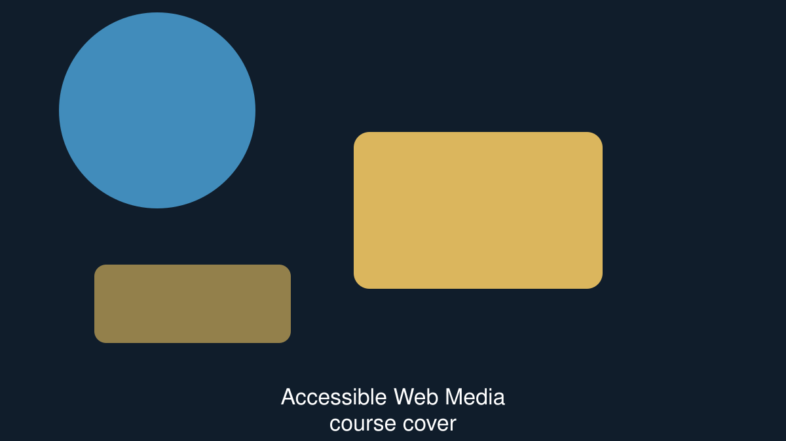
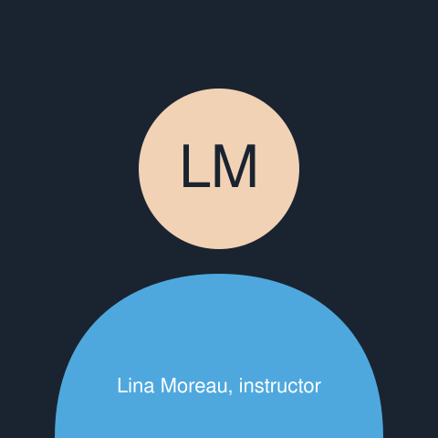

Accessible Web Media
Everything you need to publish audio, video and images that work for people who cannot hear them, cannot see them, or cannot do either.

Taught by Lina Moreau, accessibility engineer.
Course facts
- Length
- of lessons, plus exercises.
- Structure
- Four modules, fourteen lessons, two quizzes.
- Level
- Intermediate. You should be comfortable writing HTML by hand.
- Language
- English, with captions in English and Arabic on every lesson.
- Last updated
- Price
- £58, or free with a Meridian Learn subscription.
Your progress
7 of 14 lessons complete, 50%.
Student rating:
About this course
Most media on the web is published without captions, without a transcript, and with an alt attribute somebody typed to make a linter stop complaining. This course is about doing it properly, and about doing it quickly enough that you keep doing it after the first week.
We work file by file. You will write caption files by hand before you use a tool, because a tool that gets it 90% right is only useful to somebody who can see the other 10%. You will write text descriptions for clips where nothing is said, alt text for images that carry data, and transcripts for a two-speaker interview.
Nothing in this course requires a paid tool. Everything is done with a text editor, a browser and the files you already have.
By the end of the course you will be able to
- Write a WebVTT caption file by hand and check it in a browser.
- Decide when a clip needs a description track and when it does not.
- Produce a transcript that reads as a document, not as a caption dump.
- Write alt text for photographs, diagrams, charts and decorative images.
- Choose between captions, subtitles and a transcript for a given audience.
- Review somebody else's media and write up what is missing.
Module 2, lesson 3 — Captions, transcripts and audio description
Lesson 8 of 14. of video, plus a 15-minute exercise.
The sample clip
The clip is five seconds long, has no spoken audio, and shows a flower bud opening. It was chosen because it is the hardest kind of clip to caption well: there is nothing to hear, and everything to see.
Lesson notes
A silent clip still needs a caption track. To a viewer who cannot hear
the audio, silence and a broken caption file are indistinguishable — so
the first cue in the English track says
[no dialogue — silent time-lapse]
. That one cue is the difference
between a viewer trusting your player and a viewer assuming your player
is broken.
The reverse problem is the description track. Everything that matters in
this clip is visual, so a viewer who cannot see it gets nothing from the
audio. The descriptions track carries that information as
text, which the user agent can speak. This is the track most teams
forget, and it is the only one that helps here.
Notice what the caption files are not doing: they are not describing the composition, the colour grading or the lens. Captions and descriptions carry information, not appreciation. If the shot were purely decorative and the page said so in its text, this clip would need neither track — and knowing that is as much a part of the job as writing the cues.
Transcript
The clip has no spoken audio. It is a five-second time-lapse: a closed pink flower bud fills the frame, then the petals unfold until the flower is fully open. A viewer who cannot hear misses nothing; a viewer who cannot see misses everything, which is why the description track exists.
Download the full lesson transcript (plain text, 1 KB)
What to do next
- Open the three caption files in a text editor and read them.
- Write a fourth track: captions in a language you speak.
- Take the module 2 quiz below.
- Move on to lesson 4, Writing a transcript for two speakers.
Curriculum
Fourteen lessons in four modules. Open a module to see its lessons.
Module 1 — Foundations (3 lessons, 55 minutes)
Module 1 lessons
Lesson 1 — Who media accessibility is for. , video. Completed.
Lesson 1
The four groups of people affected by inaccessible media, and the legal position in the UK, the EU and the US.
Lesson 2 — Captions, subtitles, transcripts, descriptions. , video. Completed.
Lesson 2
Four words that are used interchangeably and should not be. What each one is for, and which audience each one serves.
Lesson 3 — Reading a WebVTT file. , reading. Completed.
Lesson 3
Cue timings, cue payloads, notes, and the three mistakes that stop a browser loading a track at all.
Module 2 — Captions and transcripts (4 lessons, 1 hour 40 minutes). You are here.
Module 2 lessons
Lesson 1 — Writing your first caption file. , exercise. Completed.
Module 2, lesson 1
Caption a 90-second interview clip by hand, then check it in two browsers.
Lesson 2 — Timing, reading speed and line length. , video. Completed.
Module 2, lesson 2
Why 37 characters a line and 180 words a minute, and what happens to comprehension when you ignore both.
Lesson 3 — Captions, transcripts and audio description. , video. In progress.
Module 2, lesson 3
The lesson you are on. Go to the lesson.
Lesson 4 — Writing a transcript for two speakers. , exercise. Not started.
Module 2, lesson 4
Speaker labels, overlapping speech, and turning a caption file into a document somebody would actually read.
Module 3 — Images and diagrams (4 lessons, 1 hour 35 minutes). Locked.
Module 3 lessons
Locked until you complete module 2 and pass its quiz.
- Lesson 1 — Alt text as a decision. , video.
- Lesson 2 — Charts, maps and complex images. , video.
- Lesson 3 — Decorative images and when to say nothing. , reading.
- Lesson 4 — Describing thirty images against the clock. , exercise.
Module 4 — Reviewing and shipping (3 lessons, 1 hour 30 minutes). Locked.
Module 4 lessons
Locked until you complete module 3.
- Lesson 1 — Reviewing somebody else's media. , video.
- Lesson 2 — Writing the review up for a client. , exercise.
- Lesson 3 — Final assessment. , quiz.
End-of-module quiz — module 2
Five questions. The pass mark is 4 out of 5, and you have three attempts. Your best attempt counts.
Your progress and certificate
2 of 4 lessons in this module complete.
Quiz average so far:
Certificate rules
- To qualify
- Complete all fourteen lessons and both quizzes.
- Pass mark
- 4 out of 5 on each module quiz, and 70% on the final assessment.
- Attempts
- Three per quiz. Your best attempt counts.
- Issued
- Within one working day of the final assessment being marked, as a PDF and as a verifiable link.
- Expiry
- Never, but it names the edition of the course you took, so it is honest about its age.
Your instructor

Lina is an accessibility engineer in Lyon. She spent six years captioning and describing broadcast material before moving to the web, and now audits media for two national broadcasters and a university library.
She teaches three courses on Meridian Learn:
- Accessible Web Media — this course
- Accessible Forms in Depth
- Auditing a Site You Did Not Build
Lina Moreau's instructor profile
I have never once regretted writing a transcript, and I have regretted skipping one about forty times.
— Lina Moreau, module 1 introduction
Questions students ask
What do I need to know before starting?
Enough HTML to write a page by hand, including elements with attributes. You do not need JavaScript, a build tool or any paid software.
How fast should I go?
Most students finish in three weeks at three lessons a week. The exercises are the slow part and they are the part that matters, so do not skip them to reach the certificate faster.
Does the certificate mean anything?
It means you completed fourteen lessons and passed three assessments, one of which is marked by a human. It is not a professional accreditation and we never describe it as one.
Can I get a refund?
Full refund within 30 days, or within 14 days of finishing the course, whichever is later. No form to fill in — email us and we process it the same day.
Does this course cover React, Vue or any other framework?
No. Everything here is the platform itself: HTML elements, attributes and WebVTT files. It applies inside any framework, which is why we teach it outside all of them.
Are the lessons captioned?
Every lesson has English and Arabic captions, an English description track where the visuals carry information, and a downloadable transcript. It would be a strange course if it did not.